Chromium local com uma conta e dois Núcleos descartáveis. Referência Next.js v3.11.1 e Atlas. Movimento reduzido. O recorte compara a estrutura ao redor do conteúdo, que tem passos próprios. As notificações continuam ilustrativas.
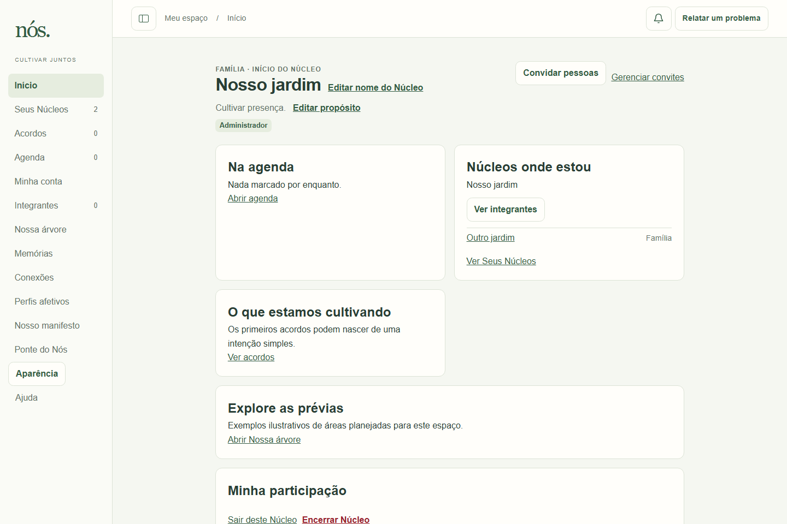
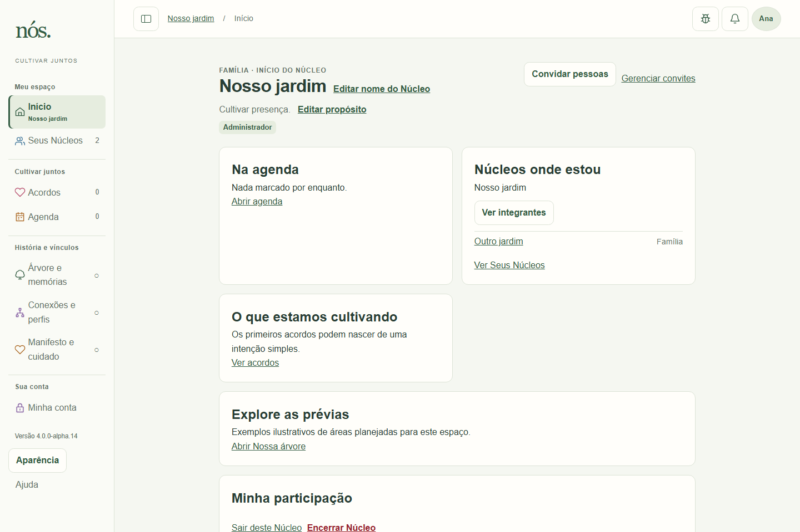
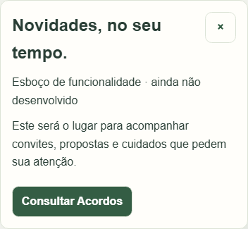
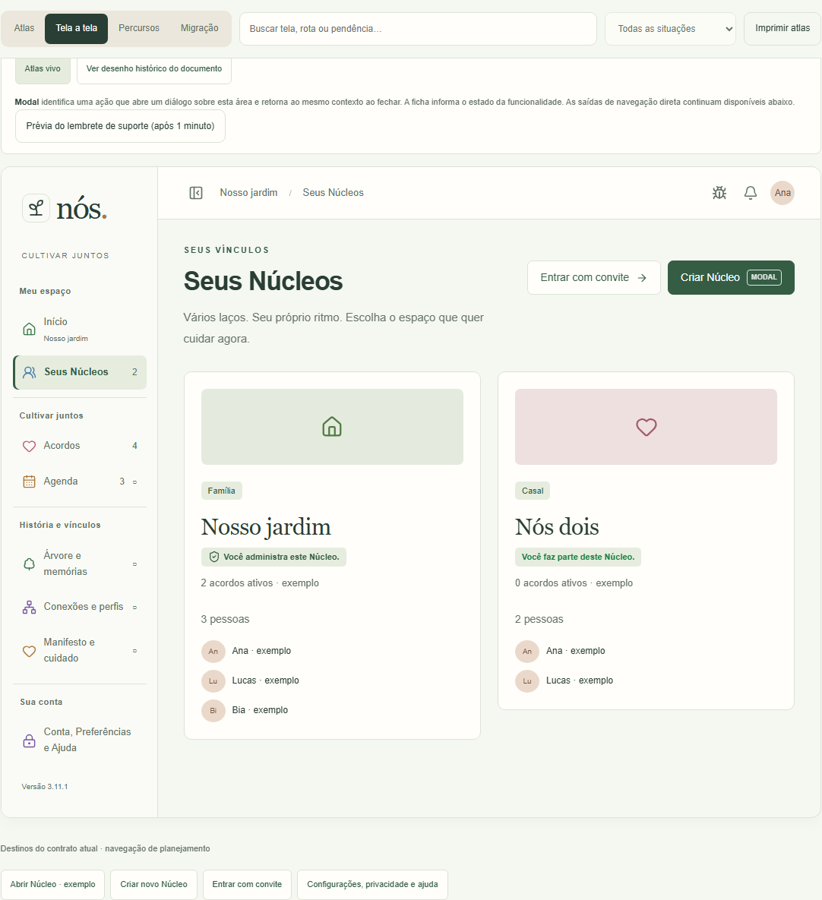
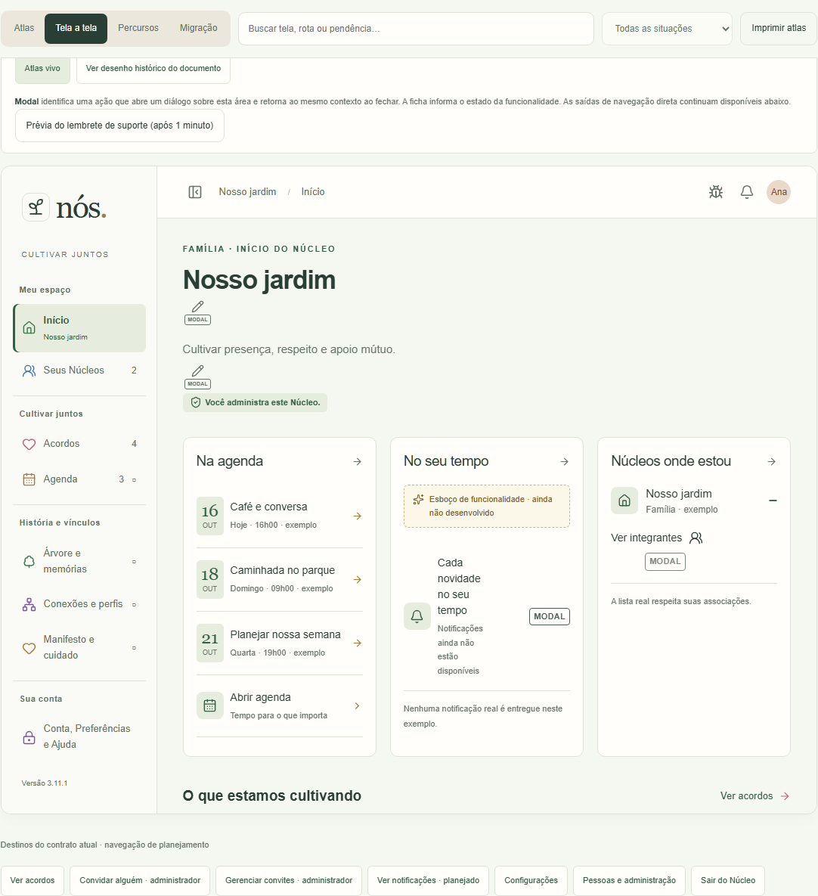
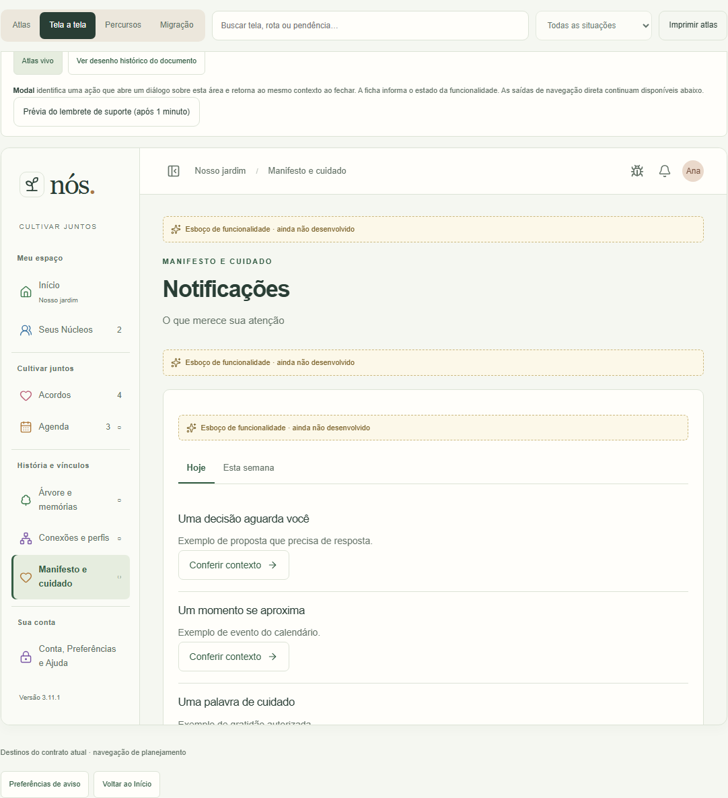
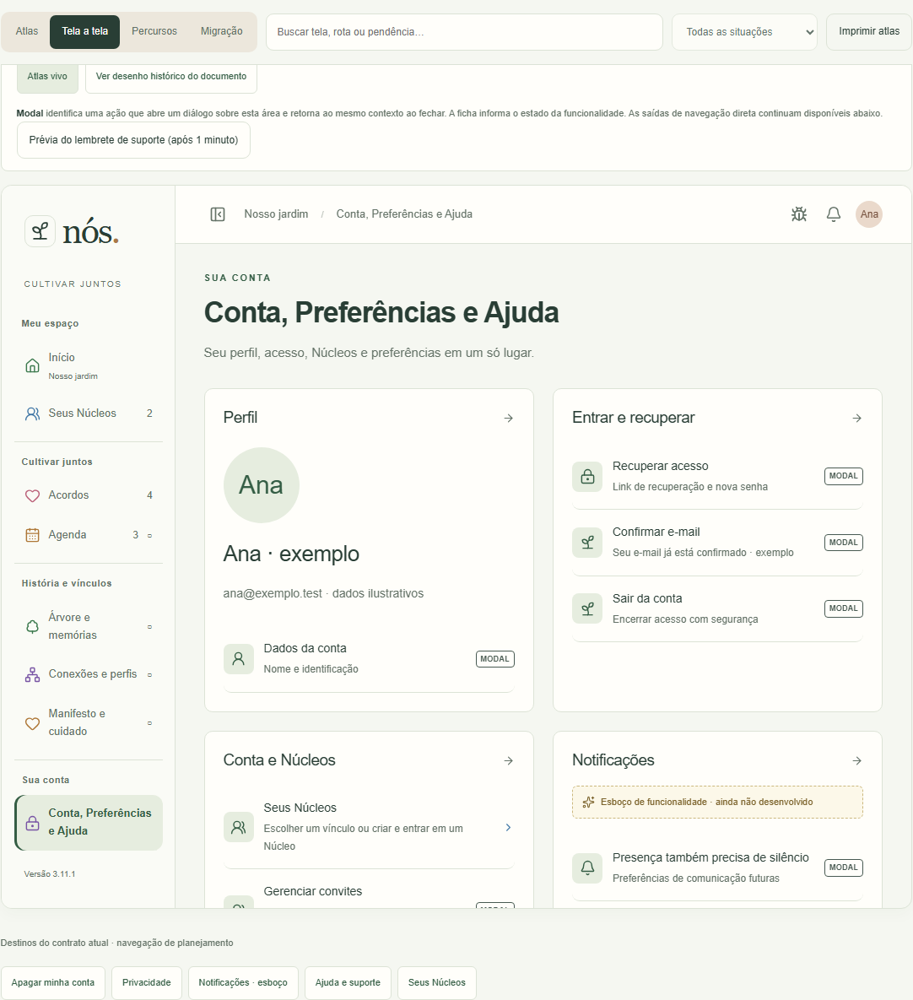
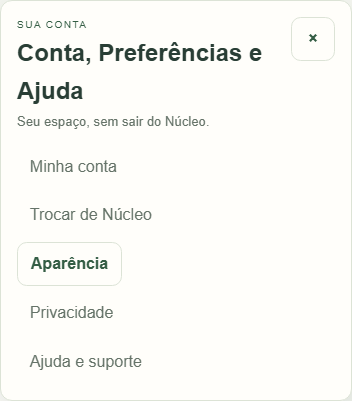
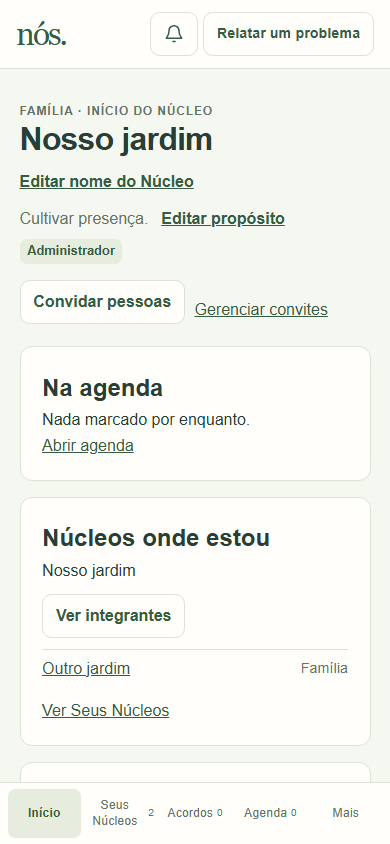
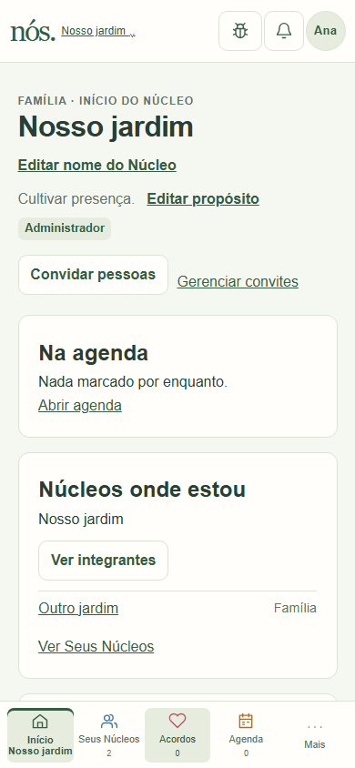
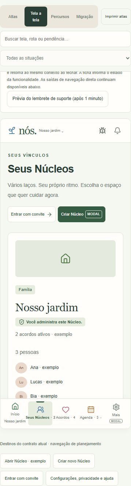
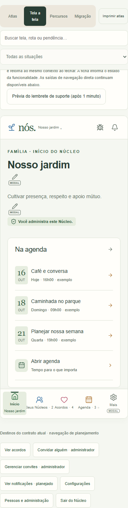
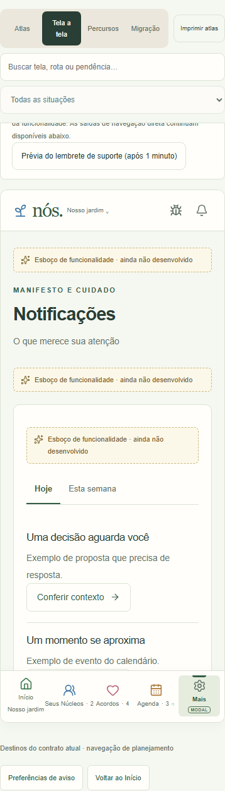
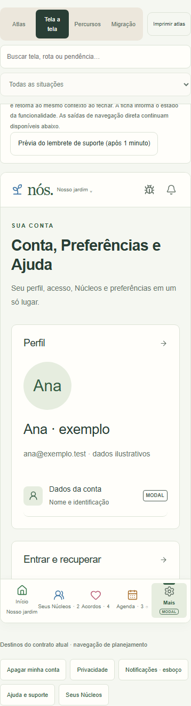
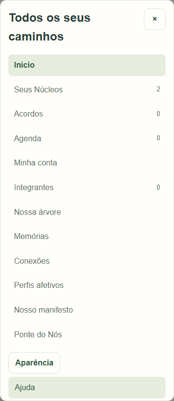
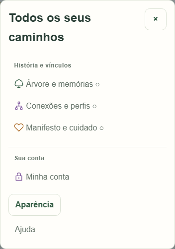